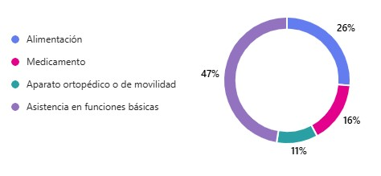

¿Quiénes somos?
Vivir con una enfermedad neurodegenerativa es un viaje difícil, profundo y muchas veces solitario.
Quienes enfrentan ese viaje —como aquellas personas diagnosticadas con ELA— experimentan una pérdida progresiva de autonomía que desafía no sólo su cuerpo, sino también su dignidad, sus relaciones y su sentido de esperanza.
Pero esta realidad no sólo impacta a quién la padece. Las familias se convierten en cuidadoras, protectoras, defensoras y acompañantes. Su vida también cambia: surgen ajustes drásticos en las rutinas, en las finanzas, en los proyectos personales y, muchas veces, en la salud emocional.
El impacto económico puede ser devastador. Los tratamientos, dispositivos de apoyo, medicamentos, cuidados especiales y ausencias laborales generan una carga que muchas veces no es visible ni comprendida y junto a ello se suma el desgaste emocional de ver a un ser querido deteriorarse y sentirse impotente ante un proceso que no se puede detener.
En LUUNAC – Lulú, un abrazo al corazón, reconocemos este dolor. Lo sentimos, lo entendemos y abrazamos aquellos que lo viven. Porque no se trata solo de enfocarse en la enfermedad, sino de acompañar con humanidad, respeto y compasión.
Nuestro deseo es crear un espacio donde cada historia sea escuchada, cada necesidad sea atendida con amor, y cada familia encuentre una red que sostenga, oriente y dignifique el camino que transitan. NECESITAMOS TU AYUDA.
Actividades
Hemos realizado un breve estudio de necesidades de aquellos que se han acercado a pedir ayuda, nos enfocaremos en apoyar en la necesidades inmediatas, por que todos tenemos un contexto diferente.
- Metas de la fundación:
- Compartir alimentos
- Apoyo con medicamentos preescritos
- Provisión de equipo ortopédico
- Apertura de una casa de asistencia
¡NECESITAMOS TU AYUDA!
Cómo Ayudar
Puedes contribuir de distintas formas:
- Donaciones monetarias:
- Banco: BBVA
- Titular: LULU UN ABRAZO AL CORAZON A.C.
- Cuenta: 0124504631
- CLABE: 012180001245046312
Donataria en trámite.
Testimonios
"ELA... Sé que estás rot@ en una enorme fosa. Aunque nadie te escuche, juntos sentiremos alivio."
— Lulú

Contacto
Si tú o alguien que conoces necesita apoyo, puedes llenar nuestro formulario:
Solicitar AyudaTambién puedes contactarnos por correo: luunac@outlook.com